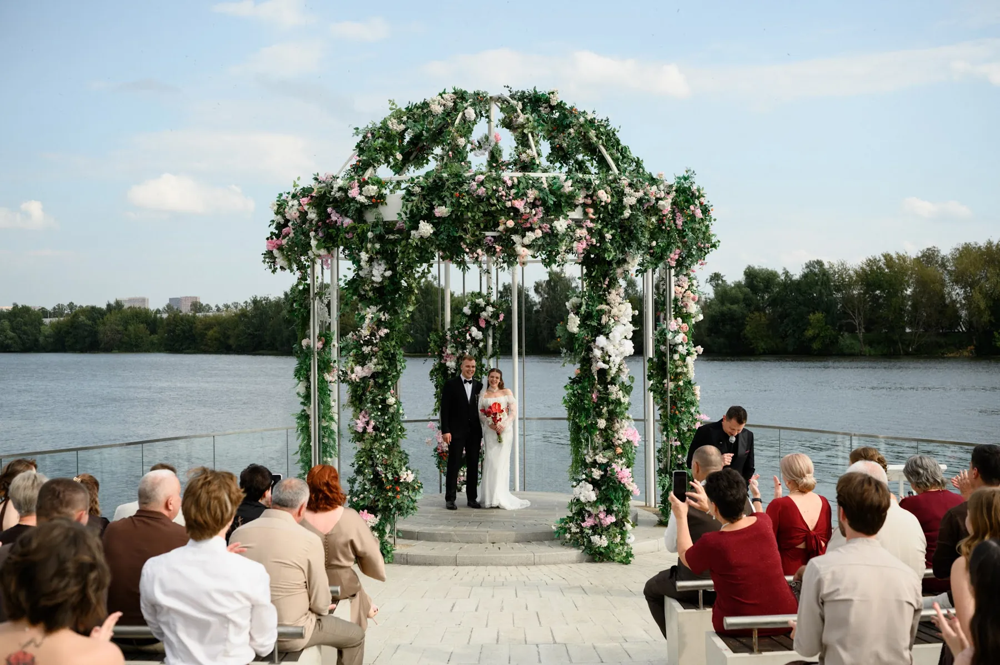
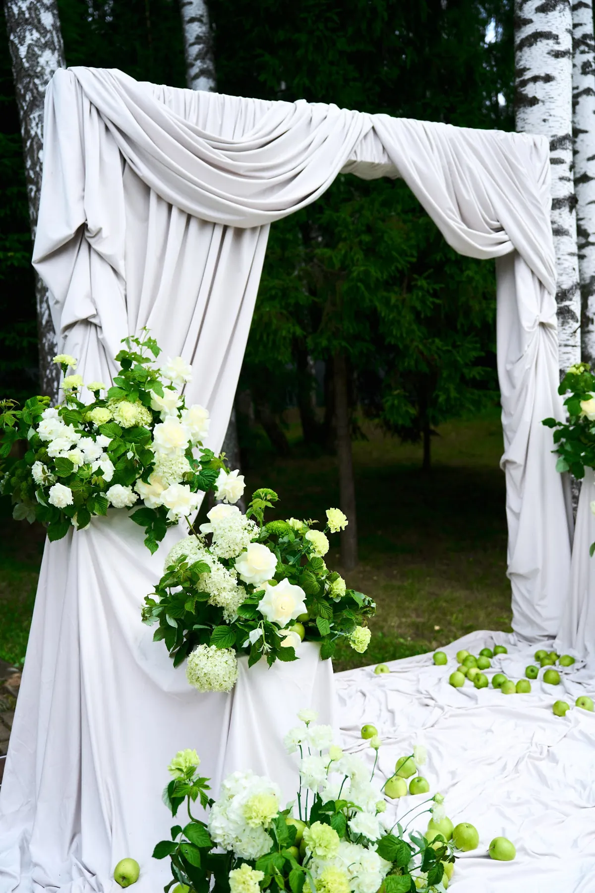

Оформление свадьбы на природе — это декор, который не спорит с пейзажем, а собирает его в кадр: арка на берегу, ротонда в зелени, тканевый проход по газону. На природе всё решают место, погода и свет, поэтому такую свадьбу готовят иначе, чем в зале. Рассказываем, что входит в оформление, как учесть ветер и вечер и как это выглядело на наших свадьбах лета 2026 года.
Свадебный декор · смета за 24 часа
Хотите посчитать декор вашей свадьбы?
Расскажите о дате, площадке и числе гостей, пришлите референсы — предложим идею и посчитаем смету по позициям за 24 часа.
Свадебный декор FFP →Что входит в оформление
- Церемония. Арка или ротонда, проход, стулья для гостей, композиции по краям — подробнее в статье про свадебную арку для выездной регистрации.
- Велком-зона. Встреча гостей, план рассадки — подробнее в статье про велком-зону на свадьбу.
- Банкет. В шатре, павильоне, на веранде или под открытым небом: президиум, гостевые столы, свет.
- Фотозона — часто ею становится сама арка.
- Свет на вечер. Гирлянды, свечи в стекле, подсветка деревьев.
Где проходит церемония
- У воды. Самый эффектный фон, но и самый ветреный: конструкции крепят с запасом, лёгкую ткань фиксируют.
- В саду и на газоне. Мягкий фон, много зелени; важно, чтобы газон выдержал стулья и каблуки.
- Среди деревьев. Естественная «стена» и тень; арку ставят так, чтобы свет падал на пару, а не из-за спины.
Как это выглядело на наших свадьбах
- Ваня и Оля — большое бархатное сердце на берегу и белый настил к воде.
- Михаил и Елизавета — ротонда, полностью увитая зеленью с розовыми и белыми цветами, на фоне воды.
- Павел и Юлия — арка из белой ткани среди берёз и зелёные яблоки в композициях.
- Дилшод и Диана — арка из кремовой драпировки с жемчугом на газоне в саду.


Погода, ветер и план Б
- Конструкции крепят с учётом ветра; лёгкие элементы — с утяжелением.
- Цветы подбирают с учётом жары: на солнце они устают быстрее.
- План Б на дождь — шатёр, веранда или зал на той же площадке; его декор продумывают заранее, а не в день свадьбы. Подробнее — в статье про свадьбу в шатре.
Из чего складывается смета
- Церемония: арка или ротонда, проход, стулья, композиции.
- Банкет: число столов, президиум, свет.
- Флористика: сорта, сезон, объём.
- Доставка за город, монтаж и демонтаж; если нужен план Б — его оформление.
Подробнее — в статье про стоимость оформления свадьбы.
Как заказать и сроки
Расскажите о дате, площадке и числе гостей, пришлите референсы — предложим идею и посчитаем смету по позициям за 24 часа. Летние даты на площадках с выходом к воде и садом разбирают заранее, поэтому декоратора лучше выбрать вместе с площадкой — зимой или весной. Работаем в Москве и Подмосковье. Посмотреть наши работы — в разделе «Кейсы», о свадебном декоре — в разделе «Свадебный декор».
Читайте также: цветочная арка на свадьбу, свадьба в Подмосковье под ключ, свадьба на теплоходе, свадьба в загородном доме.
Частые вопросы
Что входит в оформление свадьбы на природе?
Церемония с аркой или ротондой, велком-зона, банкет в шатре, павильоне или под открытым небом, фотозона и свет на вечер.
Что делать, если пойдёт дождь?
Заранее продумать план Б — шатёр, веранду или зал на той же площадке — и его оформление.
Выдержит ли декор ветер у воды?
Да, если конструкции крепить с запасом, а лёгкую ткань фиксировать и утяжелять.
Когда бронировать декоратора на летнюю свадьбу?
Вместе с площадкой — зимой или весной: летние даты разбирают заранее.